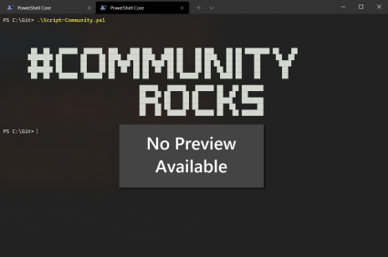

Exchange Online Mailboxes with Calendar Delegates
Summary
This PowerShell assessment script connects to Exchange Online using certificate-based app-only authentication and inventories calendar folder permissions across all mailboxes in a Microsoft 365 tenant.
The script retrieves mailbox information, identifies each mailbox's default calendar folder, and collects assigned calendar permissions, including delegate identities, access rights, and sharing permission flags. Built-in Default and Anonymous permission entries are excluded from the report.
Results are exported to a timestamped CSV file, with a corresponding log file recording assessment progress, mailbox processing errors, and execution details.

Why It Matters
Calendar permissions can accumulate over time as employees change roles, delegates are reassigned, and shared responsibilities evolve. Unreviewed permissions may expose sensitive meeting information or allow users to modify calendars beyond their current business requirements.
This assessment provides Microsoft 365 administrators with a tenant-wide view of calendar access assignments, supporting security reviews, access governance, and permission remediation.
Example scenario: During a Microsoft 365 security assessment, an administrator needs to identify users with access to executive, departmental, or shared mailboxes' calendars. The report provides a consolidated inventory for reviewing delegated access and identifying permissions that may require validation or removal.
Prerequisites
- Exchange Online PowerShell module (
ExchangeOnlineManagement) - Exchange Online application registration configured for certificate-based authentication
- Valid certificate associated with the application
- Appropriate Exchange Online application permissions and administrative configuration
- Access to the certificate private key from the system executing the script
Configuration
Update the following variables before execution:
| Variable | Description |
|---|---|
$ClientID |
Azure AD Application (Client) ID |
$ThumbPrint |
Certificate thumbprint |
$Tenant |
Microsoft 365 tenant name (e.g. contoso.onmicrosoft.com) |
$OutputFolder |
Currently set to (C:\Temp\MailboxesWithCalendarDelegates) |
# ===============================================================
# Assessment: Exchange Online Mailboxes with Calendar Delegates
# ===============================================================
$ClientID = "xxxxxxxxxxxxxxxxxxxxx"
$ThumbPrint = "xxxxxxxxxxxxxxxxxxxxx"
$Tenant = "contoso.onmicrosoft.com"
$OutputFolder = "C:\Temp\MailboxesWithCalendarDelegates"
if (-not (Test-Path -LiteralPath $OutputFolder)) {
New-Item -Path $OutputFolder -ItemType Directory -Force | Out-Null
}
$TimeStamp = Get-Date -Format "yyyyMMdd_HHmmss"
$CsvPath = Join-Path $OutputFolder "MailboxesWithCalendarDelegates_$TimeStamp.csv"
$LogPath = Join-Path $OutputFolder "MailboxesWithCalendarDelegates_$TimeStamp.log"
$Connected = $false
$Results = [System.Collections.Generic.List[object]]::new()
try {
Add-Content -LiteralPath $LogPath -Value "$(Get-Date -Format 'yyyy-MM-dd HH:mm:ss') - Assessment started."
Import-Module ExchangeOnlineManagement -ErrorAction Stop
Connect-ExchangeOnline `
-AppId $ClientID `
-CertificateThumbprint $ThumbPrint `
-Organization $Tenant `
-ShowBanner:$false `
-ErrorAction Stop
$Connected = $true
Add-Content -LiteralPath $LogPath -Value "$(Get-Date -Format 'yyyy-MM-dd HH:mm:ss') - Connected to Exchange Online."
# ===============================================================
# Retrieve All Mailboxes
# ===============================================================
$Mailboxes = @(
Get-EXOMailbox `
-ResultSize Unlimited `
-Properties RecipientTypeDetails `
-ErrorAction Stop
)
Add-Content -LiteralPath $LogPath -Value "$(Get-Date -Format 'yyyy-MM-dd HH:mm:ss') - Retrieved $($Mailboxes.Count) mailboxes."
foreach ($Mailbox in $Mailboxes) {
$MailboxAddress = $Mailbox.PrimarySmtpAddress.ToString()
try {
# ===================================================================
# Find The Default Calendar Folder, Including Localized Folder Names
# ===================================================================
$CalendarFolder = @(
Get-MailboxFolderStatistics `
-Identity $MailboxAddress `
-FolderScope Calendar `
-ErrorAction Stop |
Where-Object { $_.FolderType -eq "Calendar" }
) | Select-Object -First 1
if (-not $CalendarFolder) {
Add-Content -LiteralPath $LogPath -Value "$(Get-Date -Format 'yyyy-MM-dd HH:mm:ss') - No default calendar folder found for $MailboxAddress."
continue
}
# ===============================================================
# Convert The Folder Path To Exchange Folder Identity Format
# ===============================================================
$FolderPath = $CalendarFolder.FolderPath -replace '/', '\'
$CalendarIdentity = "${MailboxAddress}:$FolderPath"
# ===============================================================
# Retrieve Calendar Permissions
# ===============================================================
$Permissions = @(
Get-MailboxFolderPermission `
-Identity $CalendarIdentity `
-ErrorAction Stop
)
foreach ($Permission in $Permissions) {
$DelegateName = [string]$Permission.User
# ===============================================================
# Exclude Built-in Default And Anonymous Entries
# ===============================================================
if ($DelegateName -in @("Default", "Anonymous")) {
continue
}
$AccessRights = @(
$Permission.AccessRights | ForEach-Object { [string]$_ }
) -join "; "
$SharingFlags = @(
$Permission.SharingPermissionFlags |
ForEach-Object { [string]$_ }
) -join "; "
$Results.Add([PSCustomObject]@{
MailboxDisplayName = $Mailbox.DisplayName
MailboxPrimarySmtpAddress = $MailboxAddress
MailboxType = [string]$Mailbox.RecipientTypeDetails
CalendarFolder = $CalendarFolder.FolderPath
Delegate = $DelegateName
AccessRights = $AccessRights
SharingPermissionFlags = $SharingFlags
})
}
}
catch {
Add-Content -LiteralPath $LogPath -Value "$(Get-Date -Format 'yyyy-MM-dd HH:mm:ss') - ERROR processing $MailboxAddress : $($_.Exception.Message)"
continue
}
}
# ===============================================================
# Export Results, Retaining Headers When No matches Exist
# ===============================================================
if ($Results.Count -gt 0) {
$Results |
Export-Csv -LiteralPath $CsvPath -NoTypeInformation -Encoding UTF8
}
else {
"MailboxDisplayName,MailboxPrimarySmtpAddress,MailboxType,CalendarFolder,Delegate,AccessRights,SharingPermissionFlags" |
Set-Content -LiteralPath $CsvPath -Encoding UTF8
}
Add-Content -LiteralPath $LogPath -Value "$(Get-Date -Format 'yyyy-MM-dd HH:mm:ss') - Calendar permission entries exported: $($Results.Count)."
Add-Content -LiteralPath $LogPath -Value "$(Get-Date -Format 'yyyy-MM-dd HH:mm:ss') - CSV output: $CsvPath"
Add-Content -LiteralPath $LogPath -Value "$(Get-Date -Format 'yyyy-MM-dd HH:mm:ss') - Assessment completed."
Write-Host "Assessment completed." -ForegroundColor Green
Write-Host "Mailboxes assessed: $($Mailboxes.Count)"
Write-Host "Calendar permission entries: $($Results.Count)"
Write-Host "CSV report: $CsvPath"
Write-Host "Log file: $LogPath"
}
catch {
$ErrorMessage = "$(Get-Date -Format 'yyyy-MM-dd HH:mm:ss') - FATAL ERROR: $($_.Exception.Message)"
Add-Content -LiteralPath $LogPath -Value $ErrorMessage
Write-Error $ErrorMessage
}
finally {
if ($Connected) {
Disconnect-ExchangeOnline -Confirm:$false -ErrorAction SilentlyContinue
Add-Content -LiteralPath $LogPath -Value "$(Get-Date -Format 'yyyy-MM-dd HH:mm:ss') - Disconnected from Exchange Online."
}
}
Usage
- Configure $ClientID, $ThumbPrint, and $Tenant with the appropriate application and tenant details.
- Set $OutputFolder to a suitable location with sufficient storage and appropriate access controls.
- Run the script under an identity that can access the configured certificate and output directory.
- Review the generated CSV report and log file.
Output
The script creates the output directory if it does not already exist and generates two timestamped files per execution.
| File | Description |
|---|---|
MailboxesWithCalendarDelegates_<timestamp>.csv |
Calendar permission inventory |
MailboxesWithCalendarDelegates_<timestamp>.log |
Execution status and error log |
CSV Report Fields
| Field | Description |
|---|---|
MailboxDisplayName |
Display name of the mailbox |
MailboxPrimarySmtpAddress |
Primary SMTP address of the mailbox |
MailboxType |
Exchange recipient type, such as UserMailbox or SharedMailbox |
CalendarFolder |
Discovered calendar folder path |
Delegate |
Permission entry identity |
AccessRights |
Assigned calendar folder access rights |
SharingPermissionFlags |
Sharing-related permission flags, where present |
The report contains one row per included calendar permission entry. Mailboxes without a discoverable default calendar folder are logged and skipped. When no qualifying permission entries are found, the CSV is still created with its column headers.
Logging and Error Handling
The log records assessment initiation, successful connection, mailbox enumeration totals, mailbox-level errors, export details, completion, and disconnection.
Errors encountered while processing an individual mailbox are logged without terminating the entire assessment. Fatal errors are recorded separately, and the finally block attempts to disconnect from Exchange Online when a connection was established.
Notes
- The assessment reports permissions on the discovered default calendar folder. It does not inventory permissions on every calendar or subfolder within each mailbox.
- The
DefaultandAnonymousentries are intentionally excluded. Their permissions can still affect calendar access and should be reviewed separately when evaluating effective access. - The report reflects configured folder permissions, not necessarily every form of calendar access granted through other mechanisms, such as mailbox-level permissions or application access.
- The
Delegatecolumn represents the permission entry's user identity and should not be interpreted as proof of formal Outlook delegate status. - Mailboxes for which the script cannot retrieve folder statistics or permissions are logged but may be absent from the report.
- The script processes mailboxes sequentially. Runtime depends on tenant size, Exchange Online service responsiveness, throttling, and permission retrieval latency.
- The timestamp identifies the execution time, not a transactional snapshot of tenant permissions. Changes made during execution may result in observations from different points in time.
- CSV output may contain sensitive organizational access information and should be stored, shared, and retained according to the organization's security and audit policies.
Recommended Use
Run the assessment periodically as part of Microsoft 365 access governance, during security reviews, before and after organizational changes, and when investigating unexpected calendar access. Review identified permissions against business requirements before making any changes.
Execution mode: Read-only assessment. The script retrieves and reports permissions without modifying mailbox configuration or access assignments.
Contributors
| Author(s) |
|---|
| Josiah Opiyo |
Built with a focus on automation, governance, least privilege, and clean Microsoft 365 tenants - helping M365 admins gain visibility and reduce operational risk.
Version history
| Version | Date | Comments |
|---|---|---|
| 1.0 | October 11, 2026 | Initial release |
Disclaimer
THESE SAMPLES ARE PROVIDED AS IS WITHOUT WARRANTY OF ANY KIND, EITHER EXPRESS OR IMPLIED, INCLUDING ANY IMPLIED WARRANTIES OF FITNESS FOR A PARTICULAR PURPOSE, MERCHANTABILITY, OR NON-INFRINGEMENT.